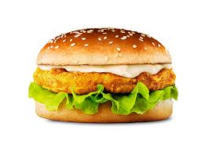

<ion-view title="Restaurant App">

  <ion-nav-buttons side="right">
  </ion-nav-buttons>
  <ion-content>
     
   <a href="#/login" type="button" class="button button-balanced">login</a>  OR
    <a href="#/signup" class="button button-balanced">signup</a>


  </ion-content>
</ion-view>
